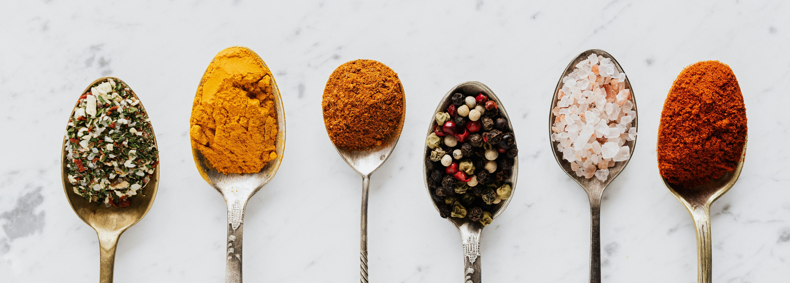

Wprowadzenie
Dlaczego warto uprawiać zioła?
Uprawa ziół w domu daje świeże przyprawy przez cały rok i pozwala kontrolować jakość roślin bez użycia zbędnych pestycydów. To także oszczędność — świeże zioła z doniczki często kosztują mniej niż kupowane w sklepie.
Posiadanie ziół w kuchni zwiększa dostęp do aromatycznych dodatków, które wzbogacają smak dań i zachęcają do eksperymentów kulinarnych. Dodatkowo wiele ziół ma właściwości zdrowotne i aromaterapeutyczne.
Wybór miejsca
Wybierz miejsce z dobrym dostępem do naturalnego światła — parapet od strony południowej lub wschodniej będzie idealny. Jeśli naturalne światło jest ograniczone, rozważ lampę do uprawy roślin.
Zwróć też uwagę na temperaturę i przeciągi: większość ziół preferuje umiarkowaną temperaturę pokojową i brak silnych zmian warunków. Stabilne miejsce zapewni lepszy wzrost.
Zasady uprawy
Podlewanie i światło
Każde zioło ma inne potrzeby wodne — np. bazylia lubi wilgotne podłoże, a rozmaryn preferuje przesuszenie między podlewaniami. Najlepiej sprawdzać wilgotność palcem lub specjalnym miernikiem.
Światło wpływa bezpośrednio na aromat i tempo wzrostu. Rośliny ziołowe zazwyczaj potrzebują co najmniej 4–6 godzin światła dziennie; przy krótszym czasie warto zastosować doświetlenie.
Nawożenie i przesadzanie
Stosuj łagodne nawozy organiczne w okresie wegetacyjnym — nadmiar nawozu może obniżyć aromat liści. Nawożenie co 4–6 tygodni w okresie wzrostu jest zwykle wystarczające.
Przesadzaj zioła do większych donic, gdy korzenie wypełnią bieżące naczynie. Świeże podłoże i odpowiednia drenażowa warstwa zapewnią zdrowy rozwój systemu korzeniowego.
Przepisy i zastosowania
Przykładowe przepisy z ziołami
Świeża bazylia doskonale komponuje się z pomidorami i mozzarellą — prosty sos pesto to szybki sposób na wykorzystanie nadmiaru liści. Wystarczy zblendować liście, orzechy, parmezan i oliwę.
Mięta sprawdza się zarówno w deserach, jak i napojach. Kilka listków w lemoniadzie lub herbacie doda świeżości i aromatu. Zioła można także suszyć lub zamrażać w kostkach lodu z oliwą.
Lista najpopularniejszych ziół do kuchni
- Bazylia — idealna do dań włoskich
- Mięta — doskonała do deserów i napojów
- Rozmaryn — aromat do pieczonych warzyw i mięsa
- Thymian (tymianek) — uniwersalny w kuchni śródziemnomorskiej
- Oregano — znakomicie pasuje do sosów i pizzy
Przechowywanie i konserwacja
Świeże liście można przechowywać w lodówce w wilgotnym ręczniku papierowym lub zamrozić, by dłużej zachowały aromat. Suszenie to tradycyjna metoda — pamiętaj jednak, że suszone zioła mają skoncentrowany smak.
Jeśli chcesz zachować oliwę z aromatem ziół, umieść świeże liście w butelce z oliwą i odstaw na kilka dni; używaj z umiarem, ponieważ smak będzie intensywny.